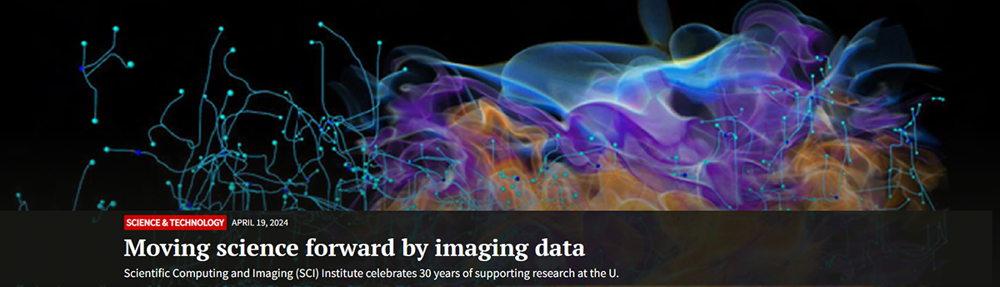
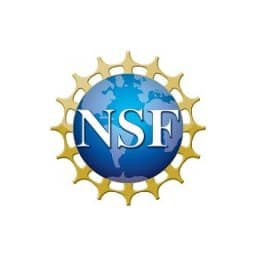

NSDF@ SCI Open House
Web-based Visualization and Analytics of Petascale Climate Data from NASA: Equity as a Tide that Lifts All Boats
University of Texas El paso (UTEP) Undergraduate class with NSDF support
NSDF-CATALOG Multi-federation Catalog for Petabytes of Community Data
NSDF and Chess Collaborate to Democratize Data-Driven Scientific Discovery
NSDF Dashboards
NSDF For Material Science Workflows
This material is based upon work supported by the National Science Foundation under Grant No. 2138811. Any opinions, findings, and conclusions or recommendations expressed in this material are those of the author(s) and do not necessarily reflect the views of the National Science Foundation. Copyright © 2024 National Science Data Fabric
